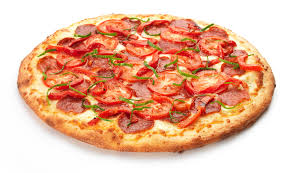

Step 1: Place a pizza stone or an inverted baking sheet on the lowest oven rack and preheat to 500 degrees. Step 2: Stretch 1 pound dough on a floured pizza peel, large wooden cutting board or parchment paper. Step 3: Top as desired, then slide the pizza (with the parchment paper, if using) onto the stone or baking sheet. Bake until golden, about 15 minutes.
Whisk 3 3/4 cups flour and 1 1/2 teaspoons salt. Make a well and add 1 1/3 cups warm water, 1 tablespoon sugar and 1 packet yeast. When foamy, mix in 3 tablespoons olive oil; knead until smooth, 5 minutes. Brush with olive oil, cover in a bowl and let rise until doubled, about 1 hour 30 minutes. Divide into two 1-pound balls. Use 1 pound per recipe unless noted.